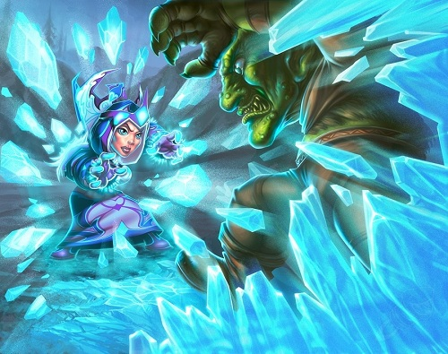
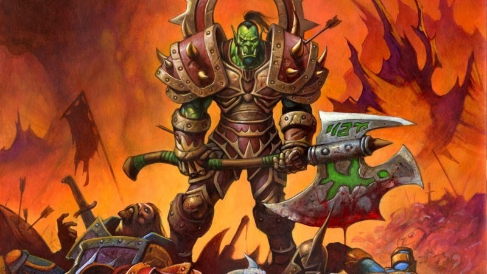

WORLD OF WARCRAFT - BURNING CRUSADE
¡Aventúrate más allá del Portal Oscuro!
Has impuesto tu ley en Azeroth. Ahora te aguarda una frontera oscura más allá del Portal Oscuro. Regresa a la era de Azeroth y disfruta de las historias intemporales que sentaron las bases de este mundo en guerra. Únete a millones de jugadores y entra en un mundo de mitos, magia y aventuras sin límites. Con una sola suscripción puedes acceder a los servidores de World of Warcraft, de World of Warcraft: Burning Crusade Classic
REVIVE LA EMOCION DE LAS BANDAS
KARAZHAN
Karazhan existió mucho antes de que Medivh la ocupara. No se sabe quien la construyó. Durante la Primera Guerra, la torre fué ocupada por Medivh, su mayordomo Moroes, su cocinero y su entonces aprendiz Khadgar. Garona también residió aquí como emisario al mismo tiempo que Khadgar realizaba su aprendizaje. Sargeras permitió a Medivh explorar Karazhan libremente. Se dice que muchas extrañas y aterradoras visiones merodeaban por la torre, y se dice que Moroes llevaba que le cubria los ojos para evitar verlas..
TEMPLO OSCURO
Con el fin de extender su dominio por toda Terrallende, Illidan el Traidor había establecido una poderosa fortaleza para sus efectivos dentro del Templo Oscuro, una antigua ciudadela draenei. Pese a ello, su influencia comenzó a menguar después de la derrota de sus más fiables lugartenientes, incluido el antiguo líder de los elfos de sangre, Kael'thas Caminante del Sol. La resultante oportunidad permitió a Akama, un sabio anciano de los antiguos draenei conocidos como los Tábidos, rebelarse contra el auto-denominado "señor de Terrallende". Junto con el antiguo carcelero de Illidan, el estoico elfo de la noche Maiev Cantosombrío, Akama ayudó a un grupo de héroes a infiltrarse en la sede del poder de Illidan y poner fin al reino del Traidor de una vez por todas.
LOS DIOSES DE ZUL'AMAN
Tras varios años de batallas contra la antigua Horda, el señor de la guerra trol Zul'jin se retiró a la ciudad de Zul’Aman, capital de los trols Amani, donde reclutó a misteriosos y oscuros poderes para reconstruir su ejército. Mientras los ojos de Azeroth se centraban en la lucha contra la Legión Ardiente y la expedición a Terrallende, los buscadores de tesoros invadieron Zul’Aman, volviendo a prender el odio de Zul’jin hacia el mundo exterior, especialmente hacia los elfos nobles de Quel'thalas. Tras enterarse de que esos "elfos de sangre" nuevamente bautizados habían pasado a formar parte de la Horda durante su ausencia, un furioso Zul’jin declaró la guerra tanto a la Horda como a la Alianza.

CLASES
CHAMÁN
El chamán es una clase híbrida la cual utiliza tanto la fuerza brutal como el poder de los elementos para infligir daño a sus enemigos y utilizar la magia para curar a sus aliados. La utilización de tótems da a esta clase la posibilidad de otorgar diferentes buffos.

SACERDOTE
El sacerdote utiliza el poder de las sombras para infligir daño a sus enemigos y la magia sagrada para curar a sus aliados. Los escudos, los buffs de entereza, resistencia a las sombras, las curaciones en área y la recuperación de mana a los aliados de su grupo.
BRUJO
El brujo utiliza el poder de los elementos de fuego y sombras para infligir daño a sus enemigos y mantener a su lado demonios que le servirán como mascotas.
CLASES
MAGO
El mago es una clase que utiliza el poder de los elementos de fuego, escarcha y arcano para infligir daño a sus enemigos y en beneficio de sus aliados para crear comidas, convertir enemigos en ovejas y silenciarlos entre otras habilidades.
DRUIDA
El druida es una clase híbrida que utiliza el poder de la naturaleza para convertirse en diferentes formas que le servirán para afrontar diversas funciones de cara a las mazmorras o bandas. Es la unica clase en tener resucitar que se puede usar en combate y es una habilidad muy poderoza en mazmorras.
GUERRERO
El guerrero utiliza la fuerza brutal para derrotar a sus enemigos y lleva equipado armadura de placas con posibilidad de llevar escudo para enfrentarse a cualquier tipo de amenaza que puedo aparecer en su camino.
CLASES
PÍCARO
El pícaro se caracteriza por posicionarse silenciosamente en su espalda y empezar el combate con el factor sorpresa de su parte. Su rapidez a la hora de golpear a un enemigo y la facilidad de control sobre este que nos proporcionan las habilidades de esta clase lo hace realmente temible.
PALADÍN
El paladín utiliza la luz sagrada para utilizar hechizos tanto dañinos para los objetivos como beneficiosos para los aliados en forma de curaciones y bendiciones. Su gran capacidad de generar amenaza de forma rápida en varios objetivos a la vez.

CAZADOR
El cazador es una clase DPS rango que utiliza flechas o balas para infligir daño desde la distancia y dispone de una mascota o pet que puede manejar para obtener beneficios de ella y para atacar.

Las inmediaciones del Portal Oscuro han estado sufriendo turbulencias últimamente. Los demonios lo han atravesado y la Alianza y la Horda han tenido que unirse para luchar contra el invasor..